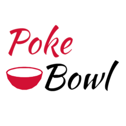

Poke your way
1choose your protein
Salmon, tuna, tofu
2pick your base
rice, quinoa,soba noodles
3Select a marinade
ponzu, sriracha aoili, seasame miso
Poke
Noun
Pronounced (po-kay)
A popular Hawaiian dish of
marinated, diced raw fish
served over rice